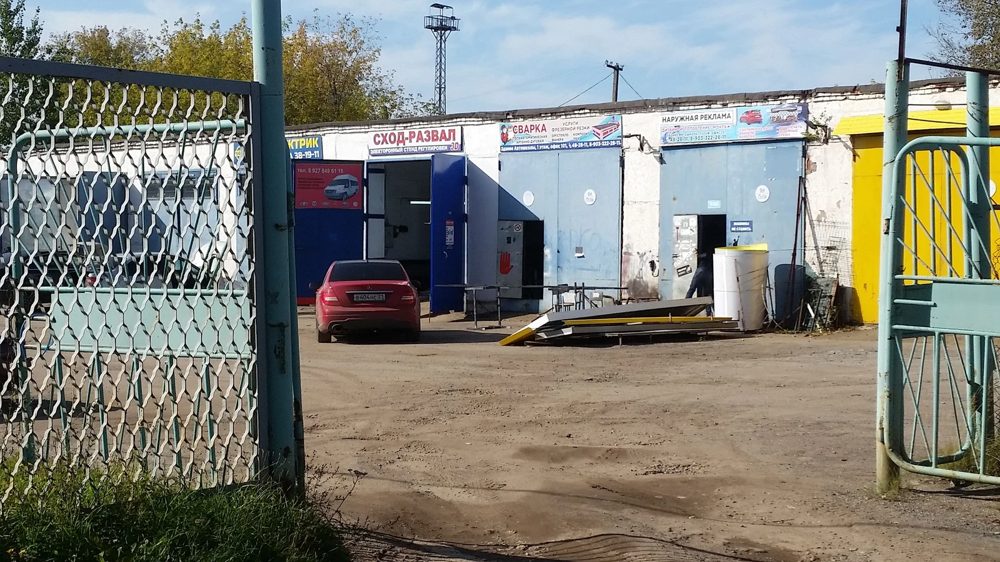
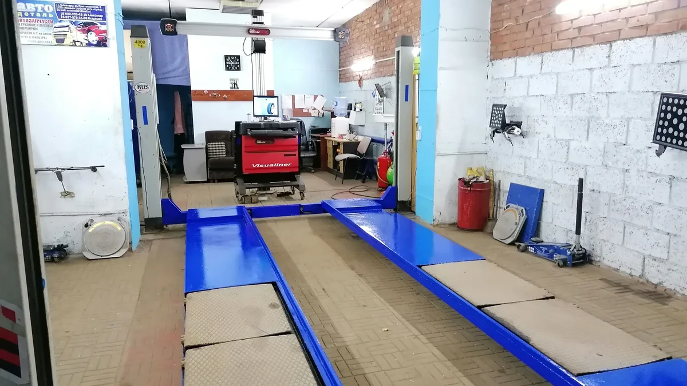
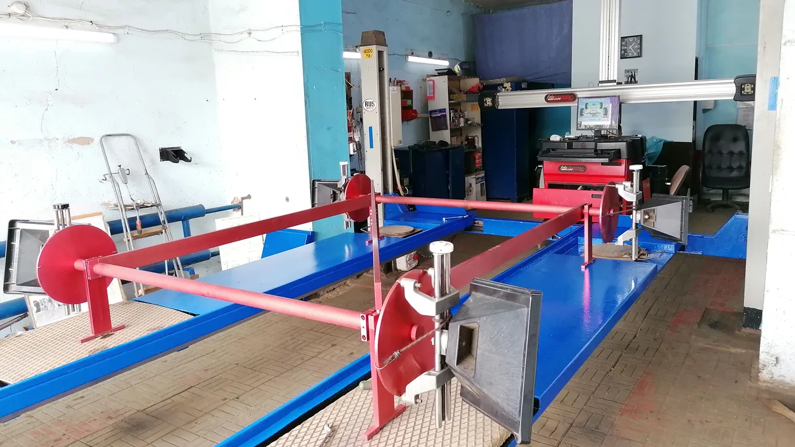
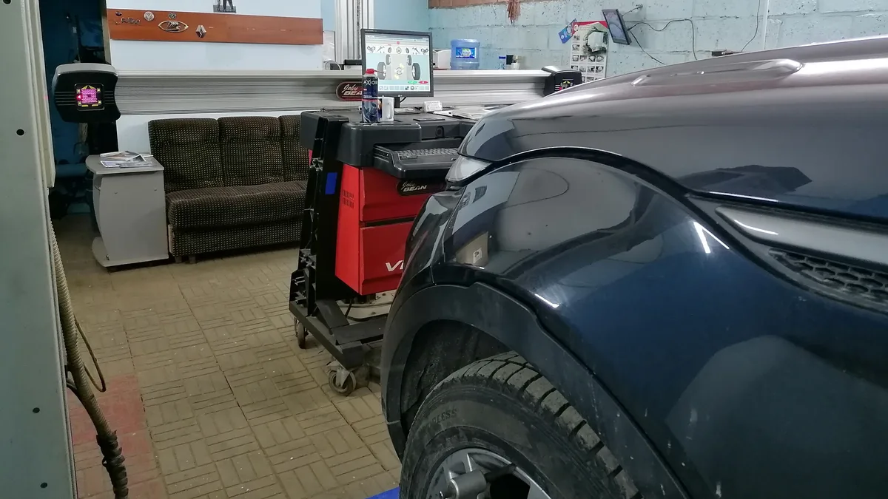

Сход-развал в Чебоксарах · проспект Мира, 52к2, бокс 7
Сход-развал 3D в Чебоксарах: регулировка на современном стенде
Сход-развал 3D на проспекте Мира, 52к2 (бокс 7): регулировка углов колёс на компьютерном стенде, предварительная запись. Работаем по записи, без долгого ожидания.
- 5,0 на Яндекс Картах, 148 отзывов
- Запись на точное время
- Пн-Пт 09:00-18:00, Сб 09:00-15:00

Услуги Сход-развал 3D в Чебоксарах
Входит
- Сход-развал 3D на компьютерном стенде
- Диагностика подвески
- Ремонт подвески и ходовой
Отдельно, если нужно
- Предварительная запись: форма на сайте, затем звонок для подтверждения
- Адрес: Чебоксары, проспект Мира, 52к2, бокс 7
- Оплата картой, парковка, Wi-Fi, диванчик для ожидания
Цены на сход-развал и диагностику в Чебоксарах
Стоимость зависит от автомобиля. Мастер называет её до начала работ.
Колёса и подвеска
- Сход-развал 3Dуточнить
- Диагностика подвескиуточнить
- Ремонт подвескиуточнить
Точные цены уточняйте по телефону перед визитом.
Как записаться в автосервис в Чебоксарах
- 01
Выбрали услугу и время
Выберите услугу, день и час в форме - заявка сформируется, дальше позвоните по номеру +7 (967) 794-22-24. Марку, год и что беспокоит расскажете по телефону.
- 02
Подтвердили время
Время подтверждаем по звонку: +7 (967) 794-22-24.
- 03
Регулировка на стенде
Мастер ставит датчики, замеряет углы и регулирует. Если причина в шине или подвеске - скажет об этом честно.
- 04
Выдача автомобиля
Осмотрите результат вместе с мастером до оплаты.



Что пишут клиенты: Сход-развал 3D
Пунктуальность
«Договорились на 10, в 10 и заехал. В боксе чисто, есть диванчик для ожидания, оборудование внушает доверие» - Андрей Просвирнов, 31 января 2025.
Честная диагностика
«Проблема была в шине, спасибо мастеру, что не стал брать полную сумму, а только за диагностику и указал на проблему» - Арсений Иванов, 23 июля.
Быстро и качественно
«Регулировали на трех машинах, все нравится. Быстро, качественно, пунктуально» - Кристина Козелкова, 14 июля.
Отзывы с Яндекс.Карт
«Регулировал сход-развал после ремонта подвески. Все понравилось. Во первых пунктуальность, договорились на 10, в 10 и заехал. В боксе чисто, есть диванчик для ожидания, оборудование внушает доверие.»
Андрей Просвирнов · 31 января 2025
«Срочно нужно было на сход-развал, но оказалось, зря паниковал, проблема была в шине, спасибо огромное мастеру, что не стал брать полную сумму, а только за диагностику и указал на проблему!»
Арсений Иванов · 23 июля
«Отличнейшее место! Регулировали на трех машинах (Октавия, Рапид, Гранта ), все нравится. Быстро, качественно, пунктуально.»
Кристина Козелкова · 14 июля
Отзывы с карточки на Яндекс.Картах, без правок.
Частые вопросы
Что такое сход-развал 3D?
Это регулировка углов установки колёс на компьютерном 3D-стенде. Её делают после ремонта подвески, замены шин или когда машину тянет в сторону.
Сколько стоит сход-развал?
Стоимость зависит от автомобиля. Мастер называет её до начала работ - уточните по телефону +7 (967) 794-22-24.
Нужно ли записываться заранее?
Да, работаем по предварительной записи: выберите день и время в форме на сайте, затем позвоните по номеру +7 (967) 794-22-24 для подтверждения.
Когда вы работаете?
Пн-Пт с 09:00 до 18:00, суббота с 09:00 до 15:00. Воскресенье - выходной.
Где находится сервис и как оплатить?
Чебоксары, проспект Мира, 52к2, бокс 7. Оплата картой, есть парковка и Wi-Fi.
Запишитесь на сход-развал 3D
- Адрес
- пр. Мира, 52к2, бокс 7, Чебоксары
- Часы
- Пн-Пт 09:00-18:00, Сб 09:00-15:00
- Телефон
- +7 (967) 794-22-24